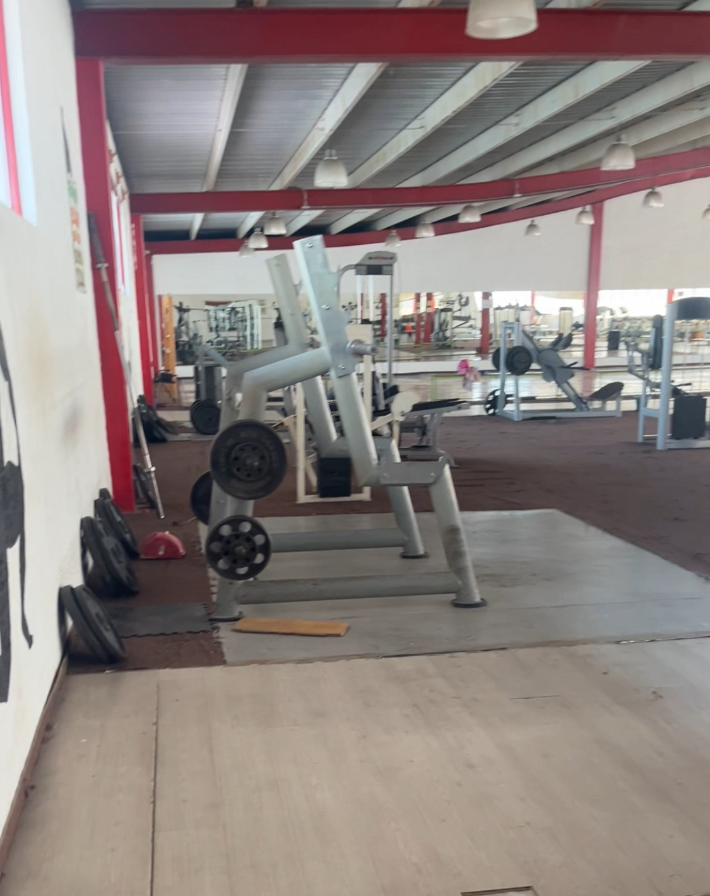
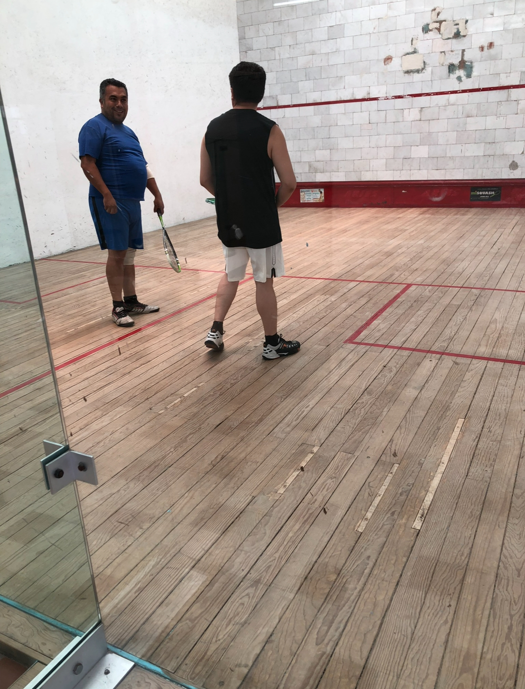
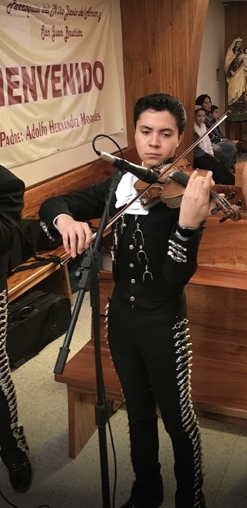

| Acudir al gimnasio |
Suelo ir a entrenar durante la semana para mejorar la salud y fuerza muscular. |
3-4 veces a la semana |

|
| Squash |
A más de hacer deporte, se pasa un rato agradable con mi papá y amigos. |
1 veces a la semana |

|
| Practicar Violín |
Más que un trabajo, es una oportunidad de mejorar, disfrutar de la música y convivir en familia. |
2-3 veces por semana |

|
| Lectura de Nuevas Tecnologías y Ciencia |
Explorar las últimas innovaciones y avances científicos en los diversos campos de la ciencia y tecnología. |
Diariamente |
|